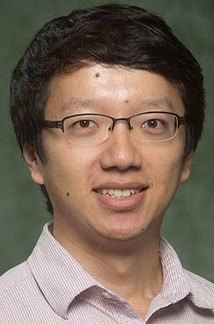

People
The people behind
the research.
Faculty, students, and alumni working across energy storage, power systems, and control.

Faculty lead
Ziang “John” Zhang
Professor of Electrical and Computer Engineering
Binghamton University — SUNY
Ziang “John” Zhang earned his Ph.D. in electrical engineering from North Carolina State University in 2013. Before joining Binghamton University, he worked at ABB’s US Corporate Research Center in Raleigh, North Carolina.
New members
Prospective students
Interested in power systems, energy storage, or control? We welcome inquiries from students with a background in electrical engineering or a related field. Experience with nonlinear dynamics, optimization, programming, or power-system modeling is useful; tell us which research questions you want to explore.
Email Ziang Zhang with a brief introduction, your CV, research interests, and your intended degree and start term. Include relevant coursework or a project that shows how you approach technical problems.
Contact Ziang ZhangIndustry collaborators
We welcome conversations with utilities, grid operators, national laboratories, and industry partners. The group works on power-system modeling and simulation, stability assessment and control, renewable and storage integration, and resource scheduling and valuation.
Share your technical challenge, the system or data involved, and the outcome you hope to achieve so we can explore a research collaboration.
Discuss a collaborationCurrent doctoral researchers
Ph.D. alumni
| Graduate | Year | Career destination |
|---|---|---|
| Xuheng Lin | 2025 | Power System Engineer, Advanced Grid Innovation Laboratory for Energy (AGILe), New York Power Authority |
| Xiaoge Huang | 2024 | Power Systems Software Engineer, Siemens USA |
| Zhenhuan Ding | 2021 | Assistant Professor, Anhui University, Hefei, China |
| Zhao Liu | 2020 | Assistant Professor, Beijing Jiaotong University, China |
Master’s alumni
Master’s thesis and project graduates, with career destinations recorded in the faculty CV.
| Graduate | Year | Career destination |
|---|---|---|
| Rachael Kohler | 2026 | DOE Clean Energy Innovator Fellow |
| Lake Hakes | 2025 | Project Engineer, AVANGRID Renewables |
| Natalie Kachmarik | 2025 | Protection and Control Engineer, AVANGRID |
| Kevin Ahrens | 2025 | Electrical Engineer, Johns Hopkins Applied Physics Laboratory |
| Muhib Khan | 2024 | Graduate Electrical Engineer, Arup |
| David Goldhirsch | 2024 | Electrical Designer, HDR |
| Erik Chorba | 2023 | System Operator, National Grid |
| John Tiburzi | 2023 | Distribution Planning Engineer, New York State Electric and Gas (NYSEG) |
| Gabriel Diaz | 2022 | Electrical Design/Project Engineer, Constellation |
| Robert Clark | 2022 | Electrical Engineer, Architect of the Capitol |
| James Greco | 2022 | Automation Controls Engineer, PeakLogix |
| Tharun Kandukuri | 2020 | PhD student, University of Cambridge |
| Isaiah Thron | 2020 | Senior EMS Engineer, New York State Electric and Gas |
| Wesley Deixler | 2020 | Manager, Operations Engineering at RWE Clean Energy |
| Bhavana Endreddy | 2019 | Hardware Development Engineer II, Amazon |
| Kenneth Nandigam | 2019 | Lab Infrastructure Engineer II, Amazon Robotics |
| Thomas Cirillo | 2018 | Lead Engineer, Energy Control Systems at AVANGRID |
| Ryan Empson | 2018 | Electronics Engineer Sr, Lockheed Martin |
| Orion Whitney | 2018 | Senior Engineer, BAE Systems |
| Xi He | 2018 | Lecturer, North China University of Science and Technology |
| Alexander Valle | 2017 | Federal Energy Regulatory Commission |
| Edward J. Cheswick | 2017 | General Dynamics |
| Liu Han | 2017 | Test Engineer, TÜV Rheinland North America |
| Jonathan Donovan | 2016 | Systems Engineer Sr. Specialist, L3Harris Technologies |
| Yishen Liu | 2016 | Project Manager, Maverick Management Group |
| Hongming Shen | 2016 | State Grid Corporation of China |
| Becky Deng | 2015 | Engineering Supervisor, Con Edison |
| Keith Lauria | 2015 | Central Hudson Gas & Electric |
| Mahmoud Amin | 2015 | Software Engineer, Google |
| Thomas Heller | 2015 | Staff Hardware Engineer, Lockheed Martin |
Former doctoral researchers
Virgil Beaston
Former doctoral researcher; left in 2023
CTO, QPO Energy
Yanbing Mao
Transferred to Emrah Akyol’s lab in 2017, graduated in 2020
Assistant Professor, Wayne State University